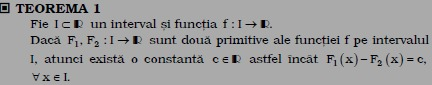

~~~Click !!~~~
1) Functia f: I -->R admite primitive pe intervalul I daca exista o functie F: I-->R astfel incat:
a) F este functie derivabila pe intervalul I;
b) F'(x)=f(x), oricare ar fi x care apartine interalului I.
2) Functia F cu proprietatile de mai sus se numeste functia primitiva (sau antiderivata) a functiei f pe intervalul I.
3) Daca functia F exista, se spune ca functia f este primitivabila pe intervalul I.

Aceasta teorema afirma ca doua primitive ale unei functii primitivabile pe un interval difera printr-o constanta. Daca F este o primitiva a functiei f:I-->R, atunci orice alta primitiva G a lui f este de forma G=F+c, unde c este functie constanta pe I.
Se deduce astfel ca daca functia f admite o primitiva, atunci admite o infinitate de primitive.
DEFINITII:
Fie I inclus in R un interval si f:i-->R o functie care admite primitive pe I.
1) Multimea tuturor primitivelor functiei f pe intervalul I se numeste integrala nedefinita a functiei f si se noteaza
OBSERVATII:
1) Din teorema 1 se deduce ca multimea primitivelor functiei f pe intervalul I satisface egalitatea:
2) Daca se noteaza C={c:I-->R| c este functie constanta}, atunci:

3) Cu ajutorul notatiilor utilizate pentru integrala nedefinita, cele trei exemple conduc la urmatoarele egalitati:
Exemple:~~~Click !!~~~